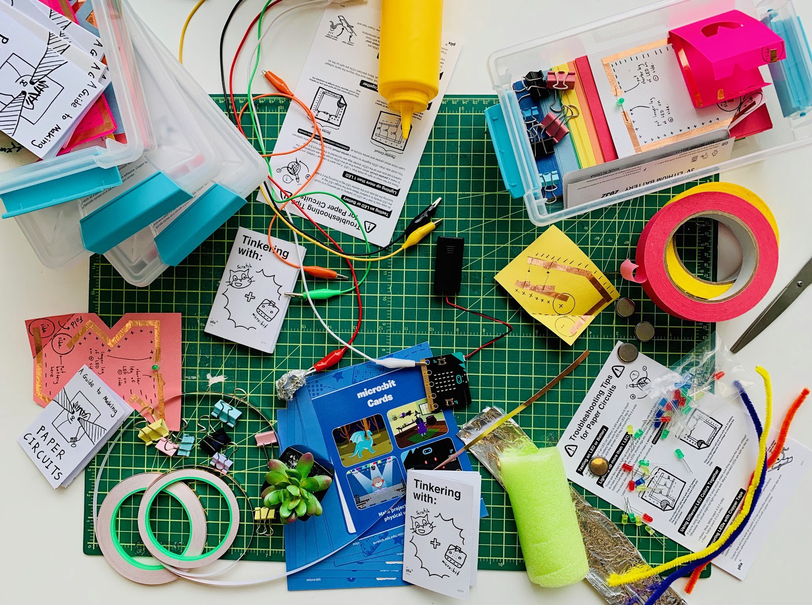

Since 2018, I've been working at MIT Media Lab's Public Library Innovation Exchange (PLIX) as a Learning Activities Designer. In my role, I collaborate with public librarians and Media Lab researchers to co-design a range of STEAM learning experiences for library patrons.
Kits for Librarians to Get Started with Creative Learning
My main project at PLIX has been making creative learning kits for librarians. I lead the design and creation of the kits, as well as the playtesting, feedback-collecting, and iterating of different versions. Working on these kits challenged me to build compelling STEAM learning experiences with multiple outcomes and branching explorations in a constrained environment.
You can read about the kits on our blog: https://medium.com/mit-media-lab/getting-started-with-creative-learning-in-your-public-library-5d41faa329d4
You can also see and print out our resources on our website: https://plix.media.mit.edu/kits/
Parts of the paper circuits and Scratch+micro:bits kits laid out.
Collaborating with Local Public Libraries
One of my favorite parts of the job is collaborating with local public libraries in Cambridge, Somerville, and Boston. I've helped design and run playtests and workshops with the librarians there. Some highlights include an Urban Ecology playtest with a branch library in Somerville, and an 8-week cube satellite workshop with the Cambridge Public Library. Working directly with librarians and patrons, I learn so much about the benefits and challenges of facilitating learning experiences at a public library.

A sensory nature walk at a local park in Somerville.
Creative Learning Workshops for Librarians
I also help run Creative Learning (based on Mitch Resnick's 4P's of Creative Learning) workshops for public librarians at various conferences and workshops. The workshops consist of playing with the kits I had designed, and having discussions about facilitation strategies to build a safe environment for experimentation and peer-learning.
We've run workshops at NextLibrary, Harvard's Library Leadership in a Digital Age, and our own two-day event in Akron.